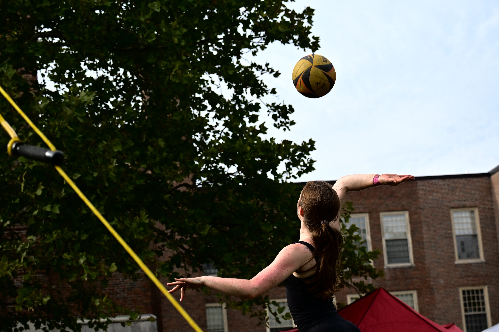

I started playing volleyball in middle school and have been in love with it ever since. It is a team sport where you truly do need multiple players to make it work. In basketball, one player can run up and down the court and score every point by themselves without needing anyone else to touch the ball. In volleyball, however, you can't pass or set yourself, so you need the social aspect of the team in order to be successful.
The last ten years have been great to watch as both a player and a fan. NCAA Division I women's volleyball went from a sport with respectable followings to one that literally sells out football stadiums (search up Nebraska volleyball's historic match). The national championship broadcast keeps finding new audiences, and professional leagues in the United States — such as the LOVB and MLV — are expanding and giving college stars a domestic place to keep competing instead of having them sign overseas by default.
The chart below uses D3 to show how average attendance at NCAA Division I women's
volleyball matches has grown each season. Note that the data in
data/volleyball-popularity.csv is made up for this assignment, but it
is reflective of the real trend and could be replaced by real NCAA data.

Hover over a bar to see the attendance for that season.
Want to discuss who's making the championship this year? Get in touch.